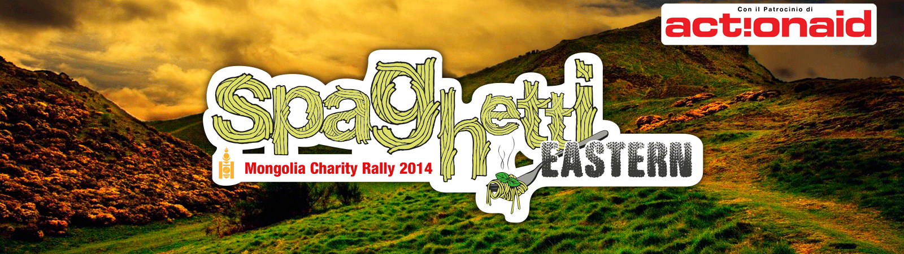

Milanese, classe 1986, ha avuto fin da piccolissimo la passione per i motori. Ha partecipato a diversi Campionati in svariate categorie, dai Kart 100cc alla Formula Renault. Laureato in Economia presso l'Università Cattolica di Milano, riveste un ruolo di primo piano nell'azienda Borile Motorcycle, di cui ha curato di recente il progetto "Multiuso". Insieme ad altri ha già percorso la rotta per Capo-nord in macchina, la tratta ferroviaria Transiberiana fino a Pechino. Le sue passioni sono i motori, viaggiare, la chitarra e il Milan.
Milanese, classe 1987, ha militato dal 2008 al 2014 nella squadra Italiana di Short Track., partecipando a competizioni internazionali in giro per il mondo (America, Asia, Europa, Australia) e vivendo per mesi interi in albergo. Laureando in Economia presso l'Università di Pavia non ha ancora deciso cosa farà da grande. Di tanto in tanto cura il marketing online per diverse piccole aziende. Insieme ad amici ha attraversato Turchia e Siria su rotaia, e percorso la via della seta da Nukus a Tashkent. Le sue passioni sono il "fai da te", i viaggi, l'Asia Centrale e la birra.

Milanese, classe 1986 è un grande amante della velocità e degli sport estremi. Ha praticato Downhill in bicicletta a livello nazionale. Laureato in ingegneria meccanica presso il Politecnico di Milano si occupa di Project Management in un'azienda nel ramo idrocarburi. Ha attraversato la Giordania e girovagato per quasi tutta l'Europa. Da amante della velocità non perde mai l'occasione di un giro con la sua Kawasaki o di un fuoripista con gli sci. Le sue passioni sono la moto, sciare, il downhill e il volo.
Milanese, classe 1987, ha da sempre dimostrato un grande amore per la scienza. Si è laureato in biotecnologie mediche presso l'Università San Raffaele. Dopo un'esperienza di ricerca durata 9 mesi in Australia si è trasferito a Cambridge dove lavora come ricercatore ad EMBL-EBI. Ha girovagato per l'Egitto, la Siria, l'Uzbekistan e in molti altri paesi dell'Est. Amante della pesca si ritira spesso in Scozia per pescare in solitaria. Le sue passioni sono la robotica, la tecnologia, l'alpinismo e la musica classica.
Milanese, classe 1987, si è laureato in Medicina presso l'Università San Raffaele di Milano e ha ottenuto l'abilitazione come medico nel 2013. Attualmente è specializzando in fisiatria presso l'istituto Auxologico e tiene corsi di primo soccorso in varie aziende dell'area Milanese. Gioca, nel ruolo di "guardia", nel Trezzano Basket. Ha attraversato il Nord dell'India con treni e autobus. Fin da piccolo ha dimostrato un grande amore nei confronti dei videogames. Le sue passioni sono il basket, viaggiare, i videogames e le merendine.
Milanese, classe 1987 ha da sempre la passione per la storia. Laureato in storia antica presso l'Università di Padova, si è trasferito a Parigi dove collabora con alcuni giornali locali. Data la scarsa mole di lavoro non perde mai l'occasione per un viaggio zaino-in-spalla. Ogni anno da 6 anni si reca in auto in Normandia per l'anniversario dello Sbarco. Ha Raggiunto Capo-Nord in macchina e attraversato l'Asia in treno. Le sue passioni sono la lettura, i videogames, la politica e i bar di Montmartre. Sogna di scrivere un libro raggiungendo il Vietnam su di una Renault 4.
Milanese, classe 1987, fin da piccolo appassionato di moto, da solo o in compagnia è sempre in giro sulla sua fida Africa Twin. Attualmente lavora come Media Developer presso un'azienda nel campo dell' e-learning a Milano. Nel suo "curriculum" si possono annoverare diversi viaggi in solitaria tra cui tutto l'arco Alpino, Corsica, Francia, Baviera e Slovenia. Grande appassionato di sci, freeride, alpinismo e di sport in generale, i suoi "veri amori" sono la musica rock, la birra e il Milan. Il sogno? Raggiungere Cape Town attraversando l'Africa; Naturalmente in moto!
Bellunese, classe 1987, si è laureato in Comunicazione all'Università di Padova. Scrive regolarmente per un blog e collabora con il "Corriere della Veneto", con il "Corriere delle Alpi" e con una rivista italiana di Parigi dove attualmente abita. In Francia ha anche iniziato ad insegnare Italiano. Appassionato di storia della II Guerra Mondiale, di animali, di videogiochi e di viaggi, con la sua Vespa ha già attraversato tutto l'arco dolomitico. Assiduo frequentatore dei bar di Montmartre dove, con Gabriele, passa le serate tra birra e discussioni